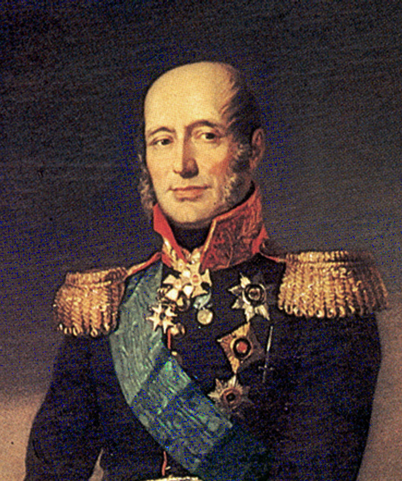

В полночь 12 июня 1812 г. началась Отечественная война. Французская армия начала переправу через реку Неман, по которой проходила западная граница Российской империи. Переправа заняла четыре дня. Это были основные силы французов, которыми командовал сам Наполеон. Часть армии была отправлена на север с намерением захватить Петербург, ещё часть — на юг, на территорию современной западной Украины. По плану французы должны были захватить русских в два кольца и уничтожить, но северные части застряли под Ригой, а южные — под Луцком.
На пути центральных сил находились первая и вторая русские армии, части которых были разбросаны на значительной территории. Наполеон продвигался стремительно. Армиям ничего не оставалось, кроме как отступать, чтобы соединиться, — иначе бы они были разбиты поодиночке. Первой армией командовал Михаил Богданович Барклай де Толли (1761–1818), второй армией — Пётр Иванович Багратион. Поспешное отступление Барклая де Толли, уклонение от сражений вызвали недоумение не только у французов, но даже у русских. Поползли слухи о предательстве, подкреплённые тем фактом, что командующий первой армией был шотландцем. Армии должны были соединиться в июле в Витебске, но смогли сделать это лишь в начале августа под Смоленском.

Первая большая битва русских и французов началась 4 августа 1812 г. Обороной Смоленска руководил Барклай де Толли. Он опасался, что Наполеон обойдёт город с тыла, блокирует Московскую дорогу, поэтому основные силы русской армии в этом сражении не участвовали. Французов задерживал корпус под командованием Николая Николаевича Раевского (1771–1829), который героически отражал атаки противника. Осада Смоленска продолжалась два дня. Всё это время Наполеон был уверен, что на поле перед городом состоится генеральное сражение. Но на самом деле основные силы русской армии отступали, оставляя французам обугленные стены разрушенного города.
Сдача Смоленска и уклонение от генерального сражения послужили причиной отставки М. Б. Барклая де Толли. На его место был назначен Михаил Илларионович Кутузов. Но он объявил тактику своего предшественника верной и продолжил отступление в сторону Москвы. Под возрастающим давлением генералитета и лично императора Кутузов принял решение дать генеральное сражение в 120 км от Москвы — на Бородинском поле.